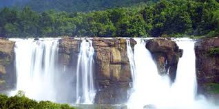
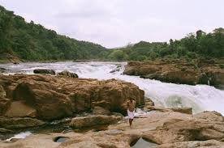
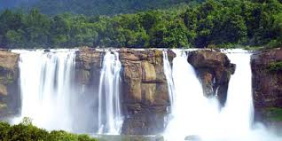
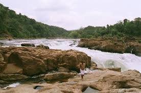

e-tourism
PERUNTHENARUVI WATERFALL
 



Perunthenaruvi Waterfalls, Pathanamthitta
The Perunthenaruvi waterfalls on the banks of the Pamba river about 10 km from Erumely is a favourite place for both domestic and foreign tourists in Pathanamthitta district, Kerala. This is a natural fall, down a rocky path into a ravine about 100 feet deep. Ideal for an outing, this place is a popular picnic spot. It is accessible by road.
Getting there
Nearest railway station: Thiruvalla, about 44 km
Nearest airport: Trivandrum International Airport, about 138 km
Location
Lattitude:9.414855, Longitude: 76.875401
Copyright2016© e-tourism | All Rights Reserved